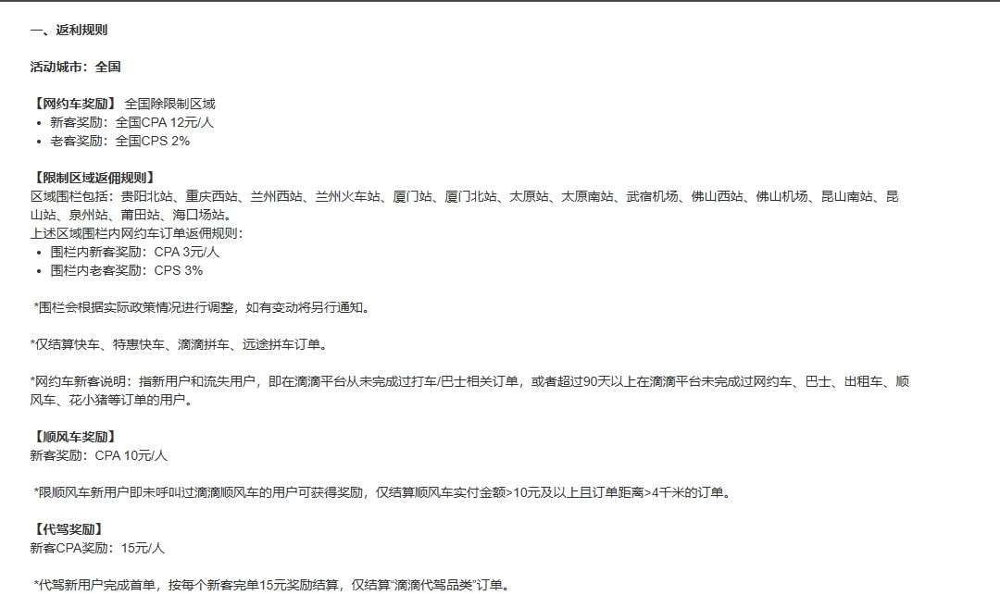

美团试吃官金额应怎样拆开解释？
CPA 当前统一按 10 元口径说明；激励入账仍要区分版本技术服务费、对私 8% 成本和对公 6% 专票成本。页面预估、上游实结和实际提现不是同一个金额节点，最终以正式账单为准。
按业务汇总群聊中形成的现行规则、待负责人复核事项和历史口径，保留来源边界与替代关系，避免把旧通知误当成当前承诺。
| 状态 | 含义 | 可否直接对客 |
|---|---|---|
| 现行 | 已由负责人确认且暂无替代通知 | 可以，但需服从后续正式通知 |
| 计划调整 | 方向明确，生效时间或口径尚未正式发布 | 只能说明“计划”，不得描述为已执行 |
| 待复核 | 来自群聊经验、旧版口径或存在冲突 | 不可以，仅供内部核对 |
| 历史 | 旧活动、旧批次、旧结算或已下线内容 | 不可以，只用于追溯 |
| 状态 | 知识点 | 执行边界 |
|---|---|---|
| 现行 | 试吃官 CPA 当前不区分版本，统一为 10 元。 | 后续达到 S 级标准后才可能恢复标准版与旗舰版差异。 |
| 现行 | 前一日数据次日约 10:00 返回，建议 11:00 后查询，最迟 22:00。 | 节假日或上游延迟需配合最新通知。 |
| 现行 | 激励按版本扣技术服务费；提现对私成本 8%，对公 6% 专票。 | 服务费、提现成本和用户实际到账需分开解释。 |
| 阶段口径 | 2026 年 Q3 返返 CPS 按实付金额 × 8% × 商家实际出佣比例计算。 | 商家出佣比例不同，不能把 8% 直接解释为固定到手比例；Q3 结束后重新复核。 |
| 现行 | 试吃官激励明细以官方返回和最终账单为准。 | 未达到最低实付、退款、风控等订单可能不计入。 |
| 现行 | 商家隐藏红包券可能同时包含美团外卖节与赏金—外卖商家：前者实时回传，后者 T+1 回传。 | 同一入口下的活动数据时间不同，不能因当日未看到赏金数据就判断漏单。 |
| 阶段口径 | 2026-08-10 至 08-16 群内说明：返返 32% 复购率是云瞻大盘或渠道整体要求，不是 CPS、CPA 分别达标。 | 单推广位暂停线和是否影响佣金属于当期评级治理，必须引用最新周期通知。 |
| 待复核 | 白名单、换链、自助取链、CPS 计算和归因锁佣的细节；试吃官阶段性关闭自由取新链，历史链接与批量白名单另行处理。 | 群内存在阶段做法，必须由商务与技术确认当前版本，不得长期固化 2026-08-11 的批次范围。 |
| 历史 | 旧版 CPA 档位、旧活动门槛、旧会场和短期加奖。 | 不得用于当前报价或客服回复。 |
| 状态 | 知识点 | 执行边界 |
|---|---|---|
| 现行 | 滴滴网约车仅结算快车、特惠快车、滴滴拼车、远途拼车订单。 | 车型边界在历史活动通知、2026-02 页面补充和 2026-05 规则截图中重复确认；佣金、区域围栏和新客定义仍按当期页面。 |
| 现行 | 车内推广订单判定无效；典型场景为行程中领取推广券后形成的订单。 | 此类订单不直接承诺佣金；用户有异议时提交脱敏订单资料给滴滴上游核查，核查不等于保证改判。 |
| 待复核 | 2025-11 群内提出哈啰“只结算 CPA 和 10 公里内不结算”。 | 与 2025-04 曾区分 CPS/CPA 的记录存在冲突，当前业务是否沿用尚无新确认，不得直接对客。 |
| 待复核 | 2025-07 上游核对口径为花小猪实付 2 元及以下不返佣。 | 来源较旧，当前活动名称、城市、车型和金额门槛需要商务重新确认。 |
| 待复核 | 滴滴代驾可结算分类曾在 2026-04 讨论扩充。 | 群内随后明确“还没有加、仍在考虑”，不能把拟增加的分类写成已上线。 |
| 渠道/场景 | 当前处理方式 |
|---|---|
| 有票票 | 可申请退换，在微信群提供单号联系客服。 |
| 淘票票 | 按影城规则执行；购票环节会显示退改签协议，以协议判断是否可退。 |
| 聚推客 | 特殊情况可提交单号尝试向供应商申请；如可退，可能产生手续费，需用户接受。 |
| 四影划算快速出票 | 现行 2026-02-27 上游截图确认快速出票有佣金；实际金额仍以订单和最终账单为准。 |
| 特价电影余额支付 | 待复核 2023-10 历史记录为余额必须大于订单金额 + 100 元；规则过旧，确认现行页面和支付通道前不得直接对客。 |
电影票处理窗口短，应优先升级；未取得渠道确认前不得承诺一定能退、免手续费或按历史余额门槛支付。
当用户同时存在自有联盟授权与云瞻指定联盟配置时，当前系统优先使用用户自有联盟授权。2026-08-17 核心群明确要求按该现行逻辑统一客服口径，淘宝联盟及京东相关同类授权场景均按此判断。
待复核项确认后，应更新为现行或历史，并记录确认人、确认日期、生效时间和替代规则。
CPA 当前统一按 10 元口径说明；激励入账仍要区分版本技术服务费、对私 8% 成本和对公 6% 专票成本。页面预估、上游实结和实际提现不是同一个金额节点，最终以正式账单为准。
次日约 10:00 开始返回，建议 11:00 后查询，最迟不晚于 22:00。上午暂未显示不能立即判定漏单；超过最迟时间或同批大面积缺失，再按数据异常 SOP 升级。
2026-08-10 至 08-16 的群内确认是大盘或渠道整体数据要求，不是 CPS、CPA 分别满足。该比例、低复购推广位暂停线及是否影响佣金均属于阶段评级规则，必须按最新周期通知执行。
2026 年 Q3 阶段通知说明，实际 CPS 佣金还要乘以商家实际出佣比例，即实付金额 × 8% × 商家实际出佣比例。商家比例不同，最终 CPS 会不同；Q3 结束或官方规则变化后必须重新确认，不能把 8% 当作所有商家的固定到手比例。
当前确认的淘宝闪购口径为 CPS 10%、CPA 20%，给用户同步的订单已扣对应官方费用。饿了么旧版细分为天天赚现金 0%、叠红包 20%、其他 CPS 10%，该细分属于待再次确认内容，对客前应引用最新通知。
2026-05-13 群内统一规则：同店点击后的跟单期为 15 天；订单归因优先级为淘礼金高于超级红包，高于直接推广链接。使用多个超级红包时，佣金跟踪给最早的超级红包推广者；预售和大促特殊订单仍按当期官方规则。
京东以父订单定档，再把父订单总激励在子订单间均分。不能用父订单档位乘以子订单数量，也不能把单个子订单金额当成整单激励。建议主推“京东外卖-惊喜红包”。
当前同时存在实时回传和 T+2 自动回传，支持抖口令、海报、短链接、deeplink 和口令中间页。官方未给统一失效时间，因此发放后要做打开、落地、下单和首单归因验证，不承诺永久有效。
当前按 M+2 发激励，例如 6 月发 5 月账单与 4 月激励；未来计划改为 M+1，但未正式生效前仍按 M+2 解释。飞猪酒店佣金一直全额对外发放。
当前规则台账只把快车、特惠快车、滴滴拼车和远途拼车列为可结算车型。群内 2024 年通知、2026-02 页面补充和 2026-05 规则截图均出现同一车型边界；佣金比例、区域围栏、新客定义和其他车型是否新增仍必须以当期业务详情为准。
历史核查已出现“车内推广订单判定无效”，典型场景是行程中领取推广券后形成订单。先核对订单车型、下单与领券时间、推广入口和最终支付状态；用户仍有异议时，把脱敏订单资料、时间和推广路径提交滴滴上游复核。提交核查只代表申请复核，不得承诺一定改判或补佣。
不能。哈啰 2025-11 的“只结算 CPA、10 公里内不结算”与更早的 CPS/CPA 记录冲突；花小猪实付 2 元及以下不返佣来自 2025-07；滴滴代驾扩充分类型在 2026-04 明确仍处于考虑阶段。三项均须重新确认当前活动、城市、车型和生效时间。
不可以。有票票可在微信群提供单号申请；淘票票以购票环节展示的影城退改签协议为准；聚推客仅能尝试向供应商申请，可能产生手续费。未取得渠道结果前不得承诺必退。
2026-02-27 的上游截图确认四影划算快速出票有佣金，实际金额仍以订单和最终账单为准。特价电影“余额必须大于订单金额 + 100 元”只见于 2023-10 旧记录，当前支付通道和页面未重新确认前只能作为排查线索。


现行 仅淘票票对应订单分类
8月26日商务确认：买券订单T+1导入“淘票票-券包”；非买券订单月末导入“淘票票”。查询前先区分订单类型，不能把月末数据当作次日漏单。
2026-08-24—08-30 飞书群上下文、引用消息与关联附件复核；更新：2026-08-31
现行 哈啰上游日报按周提供；佣金按月导入
8月28日商务确认：上游每周提供用户每日数据，平台佣金按月在结算前导入。一般次月初处理，但受对账进度影响；不能承诺固定10日或23日到账，也不能据每周报表推定周结。
2026-08-24—08-30 飞书群上下文、引用消息与关联附件复核；更新：2026-08-31
待复核 8月28日“电影”截图未辨明渠道
本周详情截图写快速出票无佣金，与已确认四影划算有佣金不同。先核对渠道、计费类型和对应页面版本；“已添加”仅证明计费字段补充，不证明所有文字均正确，不覆盖四影划算规则。
2026-08-24—08-30 飞书群上下文、引用消息与关联附件复核；更新：2026-08-31
历史批次、待核到账 8月24日原定发放批次
8月24日同程酒店小程序账单因上游款未到延期；8月27日反馈已收到并进入结算。仅说明当批处理进展，未证明每个用户已入账，不改成永久延期规则。
2026-08-24—08-30 飞书群上下文、引用消息与关联附件复核；更新：2026-08-31
待复核 8月28日至30日数据批次
商务安排因上游人员请假，8月28日至30日数据拟在8月31日补导。未取得实际导入结果前仍为待核，不向客户宣称已补齐。
2026-08-24—08-30 飞书群上下文、引用消息与关联附件复核；更新：2026-08-31
待复核 本周指定用户配置；其他字段差异待核
工单解释某用户粉丝详情的预估佣金包含激励，但另一字段差异尚未闭环。核对字段、角色、订单及统计时间，不能由单例推定所有佣金字段均含激励。
2026-08-24—08-30 飞书群上下文、引用消息与关联附件复核；更新：2026-08-31
待复核 按购买合同与具体API业务核验
工单出现试吃官是否属于所购外卖API免服务费范围争议，目前未闭环。菜单在外卖分类下不等于包含于已购买的免服务费权益；需核对合同、版本和业务清单。
2026-08-24—08-30 飞书群上下文、引用消息与关联附件复核；更新：2026-08-31
待复核 8月27日至29日短期活动；非现行长期政策
本周京粉短期加奖活动存在，但是否向小B传递奖励未获确认。需核对实际配置与账单，不把官方活动存在等同用户已获得奖励。
2026-08-24—08-30 飞书群上下文、引用消息与关联附件复核；更新：2026-08-31
待复核 本周运营日报中的9月方案
运营记录只有滴滴9月激励草案，尚未正式通知。等待负责人的最终政策和生效范围，不提前对客发布金额或门槛。
2026-08-24—08-30 飞书群上下文、引用消息与关联附件复核；更新：2026-08-31
待复核 阶段预计1至3工作日；以实际交付为准
运营记录称现有链接已有数据，需申请新链接；1至3工作日只是当期预估。先核库存和上游批准，不能承诺任何时候都有无数据新链或固定时限。
2026-08-24—08-30 飞书群上下文、引用消息与关联附件复核；更新：2026-08-31
现行 仅闪购夜宵专享会场；淘宝 App 与淘宝闪购 App
用户从夜宵专享中间页复制口令后，可在淘宝 App 或淘宝闪购 App 领券下单；两端订单均按云瞻大盘规则参与激励。iOS 直跳淘宝 App 的路径保持不变。
商务&客服业务沟通群 2026-09-01 升级通知及次日对外同步确认；更新：2026-09-07
现行 闪购品牌日（叠红包）；不得套用夜宵会场双端规则
闪购品牌日（叠红包）尚未升级为双端版，只有在淘宝 App 下单才享受激励；不能因为夜宵会场已支持双端，就向品牌日用户作相同承诺。
商务&客服业务沟通群 2026-09-01 升级通知；更新：2026-09-07
阶段口径 活动页面有效期至 2026-09-30；到期后重新复核
本期仅结算苏州、南京、无锡、常州、扬州、南通、镇江、芜湖、马鞍山、上海、杭州、宁波、温州、绍兴、嘉兴、湖州、金华、台州的有效订单；其他城市不作结算承诺。
商务&客服业务沟通群 2026-09-01 活动详情截图与负责人短回复确认；更新：2026-09-07
现行 新用户；2026-01-01 至 08-10 已在云瞻取过链接的用户免重复报备
新用户需先由商务加入报备后才能取美团试吃官链接；历史窗口内已在云瞻取过链接的用户无需重复报备。遇到 PC 与小程序同时提示报备时，先核对用户是否属于历史免报备范围。
商务&客服业务沟通群 2026-09-04 前序问题与负责人确认；更新：2026-09-07
待复核 取链提示活动不存在，但官方没有正式下线通知
当前只可建议受影响用户暂停或调整推广策略，不发布正式下线公告；需排除灰度测试、局部不可用等情况，待官方通知后再变更业务状态。
商务&客服业务沟通群 2026-09-02 讨论与最终处理口径；更新：2026-09-07
现行 滴滴机票；不是实时回传
滴滴机票订单数据按 T+1 返回。客服遇到当日无数据时应先等待次日回传，页面或话术中仍写“实时返回”的内容属于旧描述，应以本条为准。
商务&客服业务沟通群 2026-09-02 页面纠错确认；更新：2026-09-07
现行 月度激励；当月过程数据不能提前承诺最终金额
用户需等到月度结算后查看激励，技术会将当月佣金和当月激励拆成两笔入账记录；不能沿用前序“佣金与激励混在一起”的临时回答。
商务&客服业务沟通群 2026-09-04 连续问答，以后续明确结论替代前序描述；更新：2026-09-07
阶段口径 2026 年 9 月、定向私信用户；全量政策可能使用更高门槛
群内定向口径为新客量日均达到 280+ 时，全量新客按 30 元/人计算。该口径尚未作为全量公告发布，后续全量政策可能提高门槛，只能按当期负责人确认定向使用。
商务&客服业务沟通群 2026-09-04 定向政策说明；更新：2026-09-07
待复核 API 用户个案称后续不再收取，与现有按版本扣费规则冲突
本周完成工单称试吃官归入美团外卖后，历史误收按退费处理、后续不再收取；但现有正式知识仍为激励按版本扣技术服务费。负责人统一确认全量适用范围前，不覆盖现行规则，也不向其他用户承诺免收。
客服问题反馈处理群通知 2026-08-31 完结工单与既有正式规则对比；更新：2026-09-07
{kind=link}